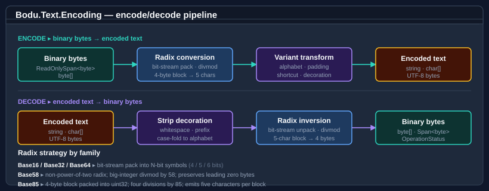

Bodu.Text.Encoding — Guides
These guides cover the day-to-day use of each binary-to-text encoding the library ships. If you are new to the package, start with the Introduction and the Core concepts pages first — the guides below assume you know the vocabulary (alphabet, variant, terminal quantum, padding, decoration, OperationStatus).
Part of the Text & Serialization topic.
How the library works

Every encoding follows the same four-stage pipeline — radix conversion, variant transform, optional decoration, encoded output. The per-encoding guides drill into the stages that vary by family: the bit-stream packing for Base16 / Base32 / Base64, the big-integer arithmetic for Base58, and the 4-byte block packing for Base85.
At a glance
| Family | Expansion | Variants | Use cases |
|---|---|---|---|
| Base16 | 100 % | lower / upper case | Hex dumps, hash digests, low-level inspection |
| Base32 | 60 % | Standard, HexExtended, Crockford, Z-Base-32 | TOTP secrets, NSEC3 DNS labels, human-spoken IDs |
| Base64 | 33 % | Standard, URL-safe, MIME | MIME / SMTP, JWT, certificates, generic binary-in-text |
| Base58 | ≈ 37 % | Bitcoin/Flickr, Ripple | Bitcoin addresses, IPFS CIDs, Solana, Stellar |
| Base85 | 25 % | Ascii85 (Adobe), Z85 (ZeroMQ), GitCompact | PDF / PostScript, ZeroMQ wire keys, Git binary patches |
| Base45 | 50 % | RFC 9285 | QR-code payloads, EU Digital COVID Certificate |
| Base62 | ≈ 35 % | GMP-style | Short URLs, compact identifiers, slugs |
| Bech32 | data + checksum | Bech32 (BIP 173), Bech32m (BIP 350) | Bitcoin SegWit addresses, Lightning invoices |
IBinaryEncoding interface |
— | the flat-byte encodings above | Runtime-selected encoding choice (config-driven serializers, plugins) |
Escape-based encodings
QuotedPrintable and PercentEncoding are not flat-byte radix encodings — they escape a subset of octets as =HH
or %HH while leaving most printable ASCII literal, so their output length depends on the content. They are static
types and intentionally not IBinaryEncoding members (their modes / options carry information the parameterless
interface cannot express).
| Encoding | Escape form | Modes / options | Use cases |
|---|---|---|---|
| Quoted-Printable | =HH (uppercase) |
Binary / Text mode; 76-column soft wrapping; strict-vs-relaxed decode | MIME message bodies (RFC 2045 §6.7) |
| Percent-encoding | %HH (uppercase) |
UriComponent / PathSegment / Query / FormUrlEncoded | URI components, query strings, HTML form fields |
Choosing between encodings
| Need | Pick |
|---|---|
| Compact ASCII transport, no special chars | Base64 (URL-safe) |
| Human-readable, spoken aloud | Base32 Crockford or Z-Base-32 |
| Crypto key / TOTP secret display | Base32 Standard |
| Hex dump for debugging / forensics | Base16 with InsertSpacing | InsertLineBreaks |
| Bitcoin / blockchain address (legacy) | Base58 Bitcoin/Flickr |
| Bitcoin SegWit / Lightning address | Bech32 / Bech32m |
| Checksum-protected address or key | Base58Check |
| Binary inside a QR code | Base45 |
| Compact URL-safe identifier or slug | Base62 |
| Embedded in PostScript / PDF | Base85 Ascii85 |
| Shell-safe binary key transport | Base85 Z85 |
| Git binary-patch payload alphabet | Base85 GitCompact |
| MIME message body (mostly-readable text) | Quoted-Printable |
| URI component / query / form field | Percent-encoding |
API shape recap
Every encoding family follows the same pattern. The bullet list below is the entire public surface — the per-family guides drill into the variant-specific options:
- Encode:
Encode(byte[]/span)returningstring,Encode(byte[], int, int),Encode(span, span)returningint,TryEncode(span, span, out int)returningbool. - Decode:
Decode(string/span)returningbyte[],Decode(char[], int, int),TryDecode(span, span, out int)returningbool. - BCL-style aliases:
ToBase{N}String(...),FromBase{N}String(...),TryToBase{N}String(...). - UTF-8 path:
EncodeToUtf8(span)returningbyte[],TryEncodeToUtf8(span, span, out int),DecodeFromUtf8(span, span, out int, out int, …, isFinalBlock)returningOperationStatus. - Streaming decode:
FromBase{N}String(span<char>/<byte>, span<byte>, out int, out int)returningOperationStatus. - Sizing:
GetEncodedLength(int),GetMaxEncodedLength(int)(where exact requires the data),GetMaxDecodedLength(int),GetDecodedLength(span),TryGetDecodedLength(span, out int). - Validation:
IsValid(span),IsBase{N}Digit(char).
Where to go next
- Base16 guide — formatting decorations, prefix handling, hex dumps.
- Base32 guide — variants and when to pick each; TOTP / Crockford use cases.
- Base64 guide — Standard / URL-safe / MIME; line wrapping; JWT.
- Base58 guide — leading zeros, big-integer encoding; Bitcoin/IPFS.
- Base85 guide — Ascii85 vs Z85 vs Git; the
zshortcut; partial-group rules; Git compact and padded modes. - Base45 guide — RFC 9285; the QR-code payload encoding; group packing and strictness.
- Base62 guide — GMP-style compact identifiers; leading-zero preservation.
- Bech32 guide — Bech32 / Bech32m; HRP, separator, checksum; 5-bit vs 8-bit data.
- Quoted-Printable guide — MIME body
=HHencoding; binary vs text mode; soft wrapping; strict-vs-relaxed decode. - Percent-encoding guide — RFC 3986 / WHATWG
%HHencoding; component modes; form mode; string helpers. IBinaryEncodinginterface — runtime-selected encoding pattern.- Runnable samples — offline sample projects under
samples/Text.Encoding/: the catalogue tour, checksummed schemes, the registry, and a custom Base36 codec with contract tests. - Encoding helpers and BOM detection —
System.Text.Encodinghelpers:string↔byte[]conversion, preamble/BOM handling, UTF classification, fallbacks, and chunked transcoding. - Text & Serialization guides — the topic map across Bodu.Text.Encoding, Bodu.Text.Filtering, Bodu.Text.Formats, and the Bencode / TOML / YAML serializers, each with its own complete guide index.